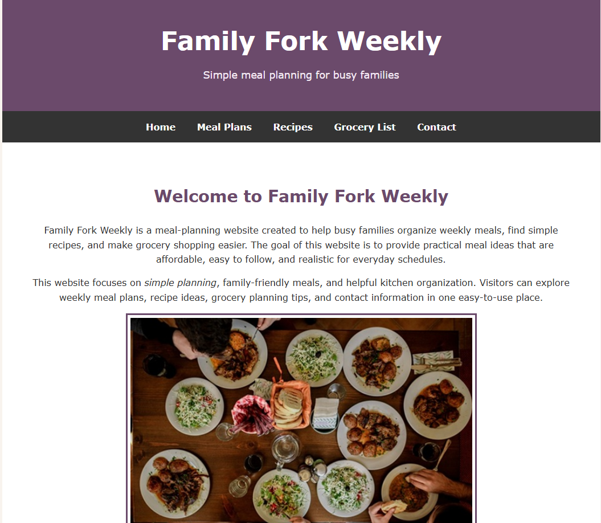
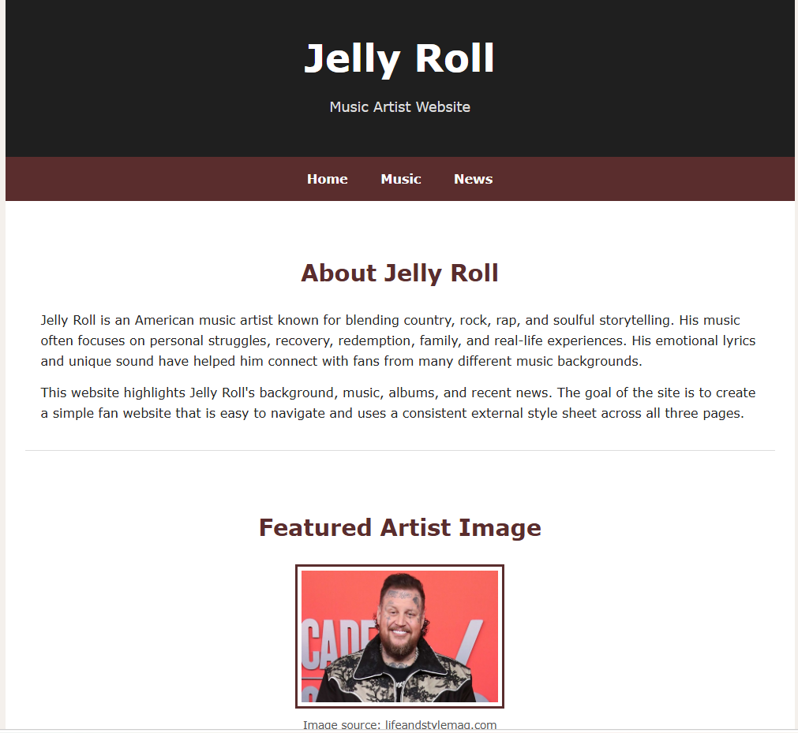
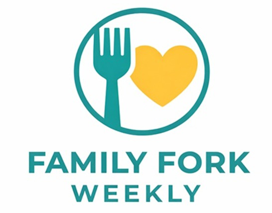
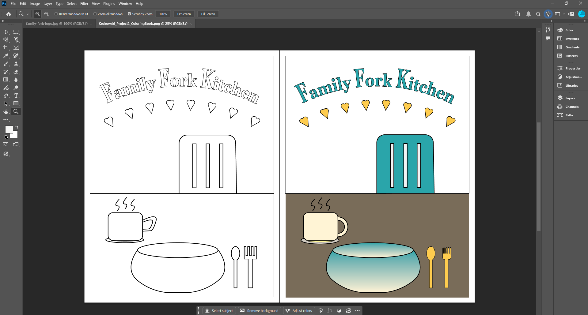
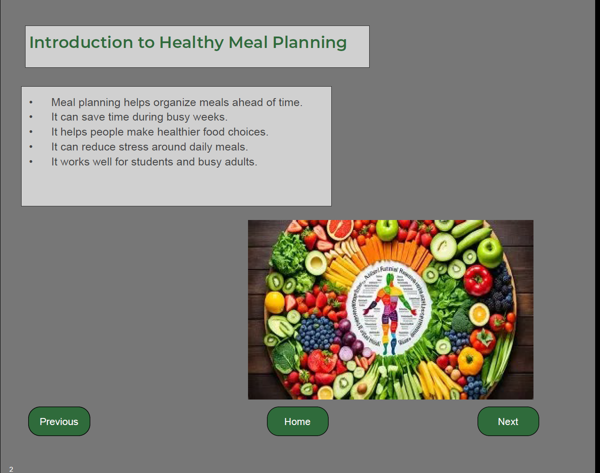
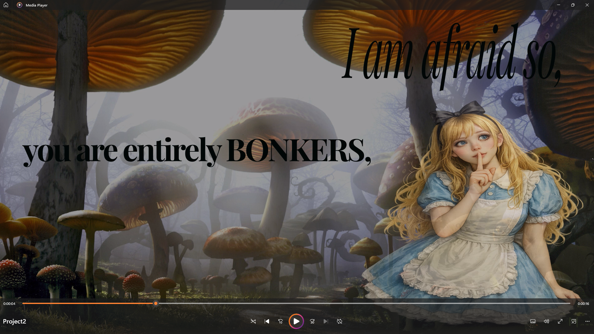

Family Fork Weekly Website
A multi-page family meal planning website created with HTML, CSS, navigation, layout planning, and consistent visual design.
HTML • CSS • GitHub • Aloft
Project DetailsProjects
This page includes six selected projects that show my growth in web design, branding, illustration, interactive design, and motion graphics.

A multi-page family meal planning website created with HTML, CSS, navigation, layout planning, and consistent visual design.
HTML • CSS • GitHub • Aloft
Project Details
A music artist website focused on external CSS, image optimization, multi-page structure, navigation, and theme-based web design.
HTML • CSS • Image Optimization
Project Details
A logo design project focused on branding, concept development, color choices, and creating a clean visual identity.
Adobe Illustrator • Branding
Project Details
A black-and-white coloring book layout created with vector graphics, line work, symbols, and creative illustration.
Adobe Illustrator
Project Details
An interactive presentation focused on healthy meal planning, clean layout, visual hierarchy, navigation, and user-friendly organization.
Adobe InDesign • Interactive Design
Project Details
A motion graphics project using animation, timing, typography, storytelling, movement, and visual effects.
Adobe After Effects
Project Details